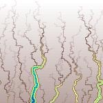
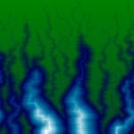
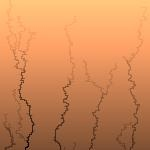
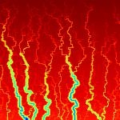

A tool for modeling the growth of river networks over time.


This program implements the process described in:
R. L. Leheny and S. R. Nagel, "Model for the evolution of river
networks," Phys. Rev. Lett., vol. 71, pp. 1470-1473, Aug 1993.
The procedure involves randomly placing water sources on an inclined plane and
'eroding' material as it flows downward.


Program options:
Topography
The regularity of the landscape, or how likely water is to flow around obstacles
rather than directly along the steepest path.
Erosion
The rate at which water removes material from the landscape.
Soil Consistency
How stable the landscape is after erosion. Defines the threshhold beyond which
steep slopes will collapse into more gradual valleys.
Modeling begins with a smooth inclined plane of topographical elevation data and
begins a water pathway at a random point on the plane. The water flows to neighboring
points, with the probability of moving to a given point i defined as:
Where E is a topographical constant (modeled in the GUI by the Topography scale)
and Δh is the elevation difference between the current point and point i.
The probabilities of each of the four neighboring points is converted to a fraction
of their sum for their respective percentage probabilities. This equation
gives the water a larger proportional probability to travel towards adjacent
points of greater downward slope, and restricts the water from flowing
to points with higher elevation. After the water has reached the bottom of
the plane (the plane wraps to itself horizontally) its path is eroded by
reducing the elevation values it has passed over by some defined erosion depth
(modeled by the GUI's erosion scale). If the slope between any two points on the
new landscape is greater than some defined soil consistency constant the procedure
evens the slope between those points to simulate a soil avalanche.
A single erosion path will not remove elevation from a single point more than once.
The placement and erosion procedure can be repeated to produce increasingly complex landscapes.
Python source code requires numpy and matplotlib libraries.